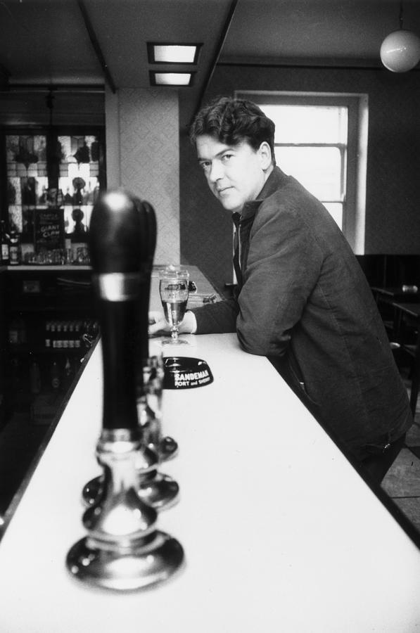

The Lucky Jim

In his professional guide, Everyday Drinking, Kinglsey Amis offered up a cocktail named after Jim Dixon, the protagonist of his first novel Lucky Jim. Since the drink is a variation on the martini, it's worth taking a look at Amis' guidelines for making the classic
Dry Martini
What You'll Need
- 12 to 15 parts gin
- 1 part dry vermouth
- Lemon rind or cocktail onions
- Ice cubes
Recipe
- A couple of hours before the party, get your glasses together. These should be on the small side--the second half of a too-large martini will have become too warm by the time the average drinker gets to it--and have some sort of stem or base to prevent the hand imparting warmth. Fill each with water and put it in the refrigerator.
- With, say, fifteen minutes to go, make an honest attempt at the fiendish task of cutting off some little strips of lemon rind so thinly that you take off none of the white pith underneath.
- Fill--and I mean fill--your jug with ice and pour in the gin and the vermouth, enough for one round, i.e. about one bottle of gin for every ten guests. (You will soon learn to judge the proportion of vermouth by eye.) Stir vigrously for about a minute.
- Leave to stand for two to three minutes. The books are against this, remarking truly that you will be allowing the ice to melt further and so dilute the mixture, but it does make the result appreciably colder; which leads me straight to [General Principle 3]: It is more important that a cold drink should be as cold as possible than that it should be as concentrated as possible.
- While the jug is standing, empty the water out of the glasses and drop a bit of lemon rind in each. If you can face it, try squeezing the rind over the glass first to liberate the pungent oil within. There is a knack to this which I have never mastered. Partly for this reason, I prefer to substitute a cocktail onion for the rind.
- Stir again for a few seconds and pour. If there is any liquor left over, you have my permission to put it in the refrigerator for use in the next round, provided you remove every particle of ice beforehand.
Notes
- Use Booth's dry gin, the yellow sort. White gin is for long drinks--with tonic, bitter lemon, etc.
- Use Martini & Rossi dry vermouth. Noilly Prat darkens the drink, making it look less dry than it is, and is too strongly flavoured. (However, it is probably the best dry vermouth for drinking on its own.)
- In pursuit of G.P. 3, stand by with ice cubes, to rechill the partly drunk drinks of any rotters or slackers who may opt out of later rounds.
- Experts will say that I have described, not a dry martini, but its drier derivative, the Gibson, which does substitute an onion for the true martini's lemon rind. Well, yes, but few people, I think, who have sampled the formula I give, by which the vermouth flavour disappears as such and yet the total flavour is still not at all that of straight gin, will want to return to the 4:1 or 3:1 ratios prescribed by convention. And my version is stronger.
Now that we have the basics covered, let's get to the point, which is to see what Amis has to say about
The Lucky Jim
What You'll Need
- 12 to 15 parts vodka
- 1 part dry vermouth
- 2 parts cucumber juice
- Cucumber slices
- Ice cubes
Recipe
- For this derivative of the Vodka Gibson, proceed as for the Dry Martini where appropriate.
- The cucumber juice can be made quite simply, though not without some effort, by cutting off a chunk, or series of chunks, about two inches long and applying first one end, then the other, to an ordinary manual lemon-squeezer.
- Sieve the result through a coffee-strainer into your mixing-jug on top of the liquor and ice, give an extra thorough stirring, and serve.
- What you serve should be treated with respect, not because it is specially strong but because it tastes specially mild and bland. It looks unusual, rather mysterious in fact: faintly coloured and faintly cloudy, the green wine of the Chinese emperors come to vigorous life. For visual reasons, the cucumber slice you float on top of each glass should have its peel left on.
Notes
- Use a British vodka, the cheapest you can find, in pursuance of G.P. 4: For any liquor that is going to be mixed with fruit juice, vegetable juices, etc., sweetening, strongly flavoured cordials and the like, go for the cheapest reliable article. Do not waste your Russian or Polish vodka, etc.
- The character after whom I have named this drink would probably make his Clement Freud face if offered one, but he would be among the first to appreciate that its apparent mildness might make it an excellent love-philtre to press on shy young ladies, if there are any of these left anywhere in the land.
Source: Everyday Drinking: The Distilled Kingsley Amis